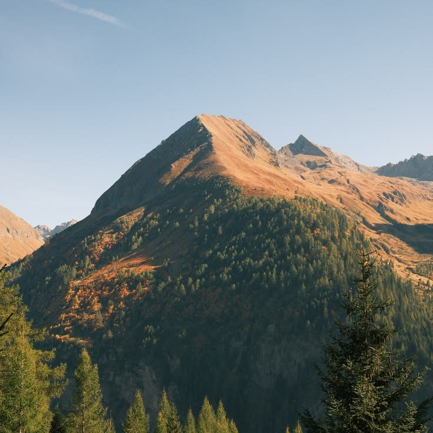

La montaña que no elegí
Una historia sobre pérdida, adaptación y la decisión de seguir adelante.
Hay montañas que elegimos escalar y otras que la vida pone frente a nosotros sin previo aviso. Una pérdida, un cambio inesperado o una experiencia que transforma por completo nuestra manera de entender el mundo.
A través de una historia profundamente personal, esta conferencia explora cómo enfrentamos aquello que no podemos controlar, cómo encontramos un nuevo sentido de dirección cuando el camino parece incierto y cómo aprendemos a encontrar significado, calma y felicidad incluso en los momentos más difíciles.
Porque quizá no podemos elegir las montañas que nos toca atravesar, pero sí podemos descubrir nuevas formas de recorrerlas. Una invitación a cuestionar nuestra propia manera de enfrentar la adversidad, reconectar con aquello que nos mueve y recordar que, muchas veces, la vida no está esperando en la cima: está sucediendo en el camino.
- Duración
- 45 a 60 minutos
- Modalidad
- Presencial o virtual
- Idioma
- Español o inglés
- Para
- Todo tipo de público